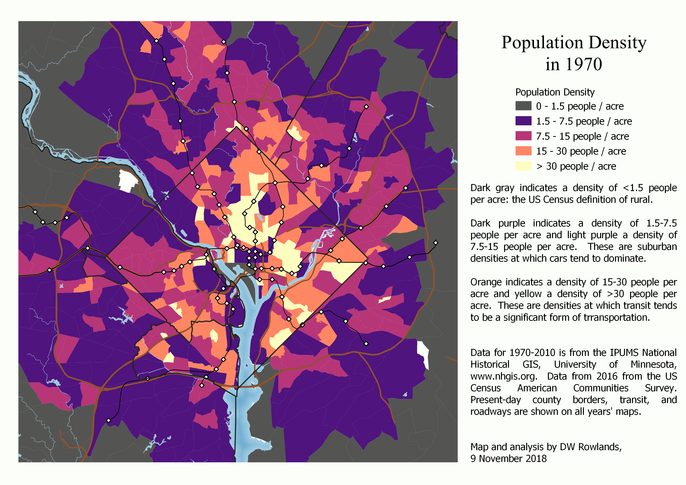

Impact DC
By Abagael Hicks & Sean Pelillo
This report explores critical, shared community needs identified in both Washington, D.C. and Wilmington, DE . The following data focuses exclusively on the District of Columbia, highlighting severe gaps in Housing, Employment, and Food Security, alongside the corporate partnerships working to bridge them.
Housing & Homelessness
Employment
Food Insecurity
Homelessness & Affordable Housing
The Crisis: Over 5,000 residents are currently displaced as of the 2025 Point-in-Time (PIT) audit [1] .Key Drivers: Extreme weather vulnerability and rapidly rising affordability gaps [4] .
United Way NCA (Lead Agency)
Improves resource allocation for local shelters.
Provides critical childcare for displaced mothers via the Women United program [3] .
Amazon (Corporate Partner)
Injects direct capital via the Housing Equity Fund to preserve transit-adjacent affordable units.
Supplies volunteer manpower for "Right Start" supply drives.

Visualizing population density to identify transit-oriented housing needs.
Employment Challenges
The Crisis: D.C. hit a national high 6% unemployment rate in August following mass federal layoffs [6] .Key Drivers: Over-reliance on public sector roles, which account for 22.9% of all local jobs [5] .
Jubilee Jobs (Lead Agency)
Guides underserved communities through career counseling and transition services [7] .
Marriott International (Corporate Partner)
Builds direct hiring pipelines to shift laid-off public workers into private hospitality.
Hosts expert-led HR workshops for resume building and interview prep.
Food Insecurity
The Crisis: 36% of DMV area households (over 800,000 people) experienced food insecurity in 2025 [8] .Key Drivers: Local food pantries are inundated with requests and lack the donations to meet demand [9] .
D.C. Hunger Solutions (Lead Agency)
Directs food donations to high-need areas.
Drives aggressive policy activism targeting the mayor and Congress [10] .
Giant Food (Corporate Partner)
Generates liquid funding via point-of-sale "round up" campaigns at registers.
Executes daily corporate food rescue operations to divert perishable goods to local pantries.